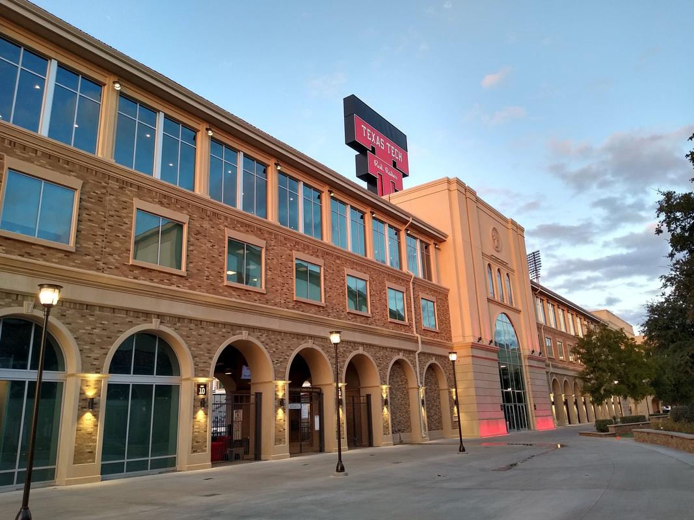
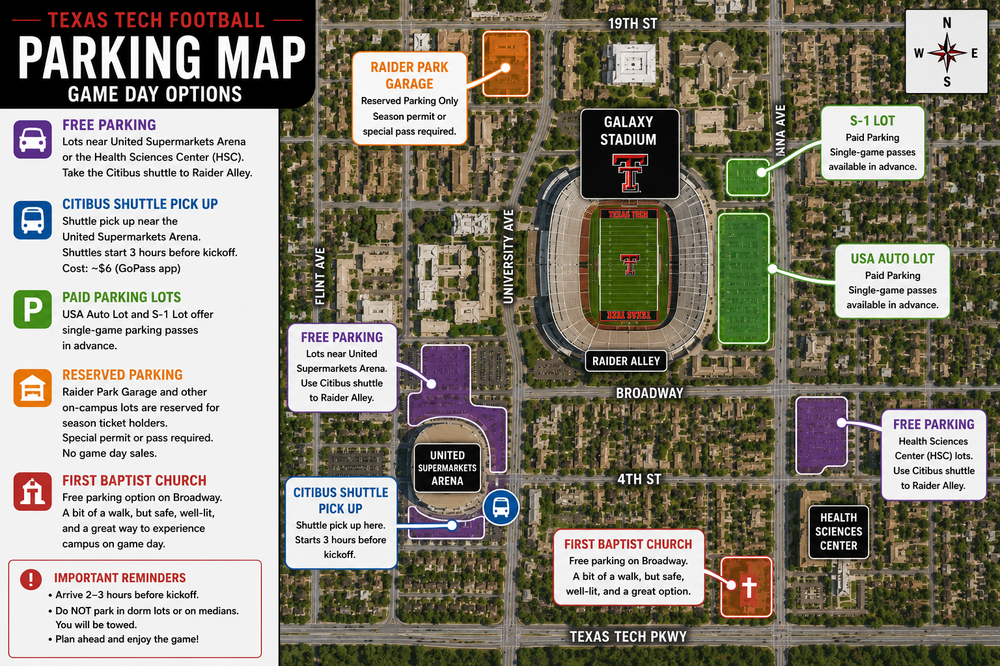

Galaxy Stadium

Stadium Information
Galaxy Stadium aka The Jones is the home of Texas Tech Football and the best game day environment in the Big 12! Located in the heart of campus, the stadium seats more than 60,000 fans. The West Side is the home side and gets signficantly more shade than the east side that is in the sun for most of the game. Sections 3,4,5,6,7 as well 103,104,105,106,107,108 and 119 have seatbacks.
Game Day Parking
-
Prked – Rent a nearby driveway for less than official parking and enjoy an easier walk and exit.
-
USA Auto Lot and S-1 Lot – Official campus lots that offer single-game parking passes but may sell out early.
-
United Supermarkets Arena – Free parking with access to the Citibus shuttle to Raider Alley.
-
Health Sciences Center – Another free parking option with shuttle service to the game day area.
-
First Baptist Church – A longer walk, but a good option if you want to walk through campus before the game.

Where to Stay
-
Overton Hotel & Conference Center – The closest luxury hotel to Galaxy Stadium and an easy walk to game day.
-
Hyatt Place Lubbock – Offers free breakfast and one of the best locations near campus.
-
Cotton Court Hotel – A unique West Texas hotel within a reasonable distance of campus.
-
Hampton Inn & Suites University – A family-friendly choice with free breakfast and convenient parking.
-
Staybridge Suites Lubbock – Affordable suites with kitchenettes for longer weekend stays.
Where to Eat
-
Spanky's – A Texas Tech tradition famous for burgers and fried cheese.
-
Chimy's – A great spot for a Chilton and one of the most popular places before kickoff.
-
One Guy Pizza – A student favorite for quick pizza near campus.
-
Triple J Chophouse – A good choice for a nicer dinner after the game.
-
Raider Alley – Enjoy food trucks, live entertainment, tailgating, and pregame fun before kickoff.
Game Day Tips
Arrive two to three hours before kickoff.
Check the weather before heading to the stadium.
Take time to visit Raider Alley before entering the stadium.
Review the stadium bag policy before game day.
Wear your Texas Tech colors and be loud.
Do not park anywhere that is not marked for game day parking because you may get towed.